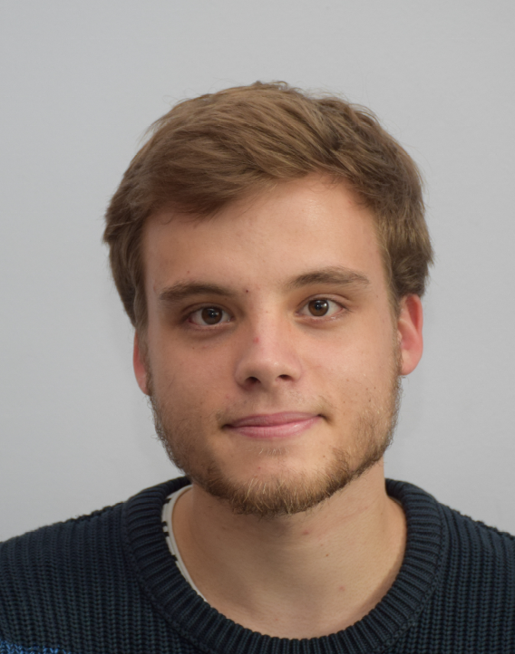

About Me

I am a graduate student in math and computer science. My main are category theory, homotopy theory and their application to computer science. I'm currently doing an intership under the supervision of Pierre-Louis Curien about
this paper that shows how oo-topos can interpret homotopy type theory.
I'll be interested in starting a PhD in this area by fall 2023.
Education
After 3 years of "classe préparatoire" (intense lessons of math and physics), I went for three years at École Centrale Lille were I studied general computer science, AI and data science. During these three years, I also obtained a bachelor and a master of mathematics, focused on probailites and functional analysis.
During the year 2021-2022, I was at the
LMFI master where I developed my skills about theoretical computer science, category theory, homotopy theory, and logic in general.
You can contact me via email (he/him): mathieu.chanavat@gmail.com
Previous work
- Category theory in Coq github
Final project of the LMFI's course 'Functional programming and formal proofs in Coq' where a student and I (re)implemented basics of category theory in Coq.
- Loops of Csörgő Type and the AIM Conjecture pdf
Summer '21 internship. I worked on the AIM conjecture and tried to develop comptutational approach to find Csörgő loops (a certain kind of non-assiociative structure) of size less than 128. Interestinlgy enough, the AIM conjecture was solved (independantly of me!) by Michael Kinyon and Bob Veroff during my internship. Some of the code can be found
here